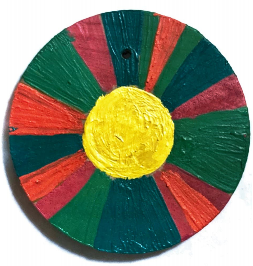
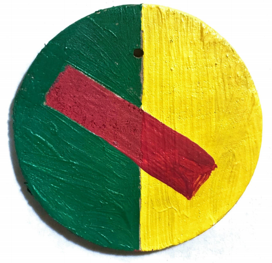
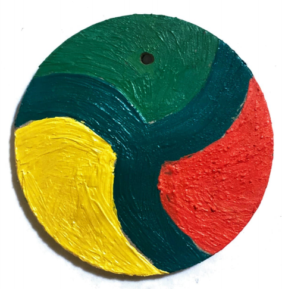
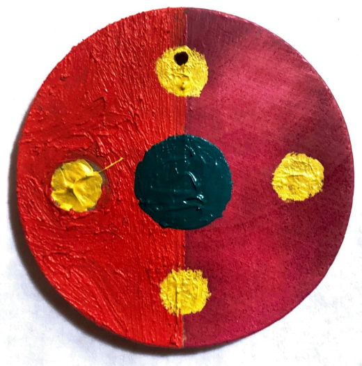
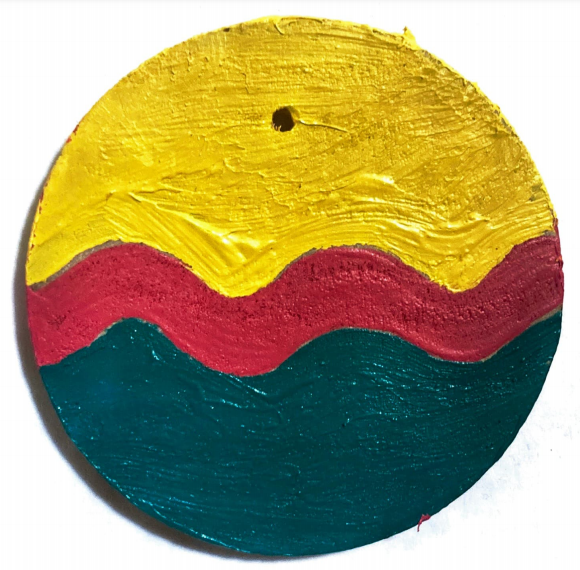
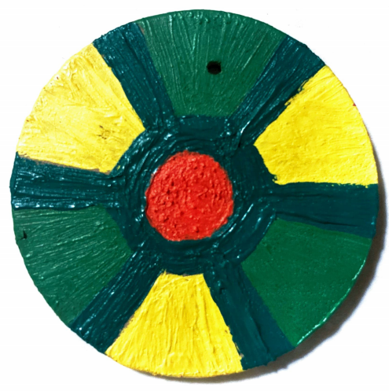
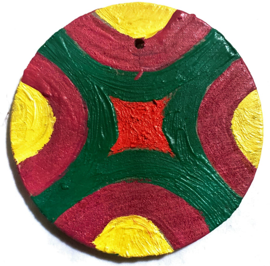
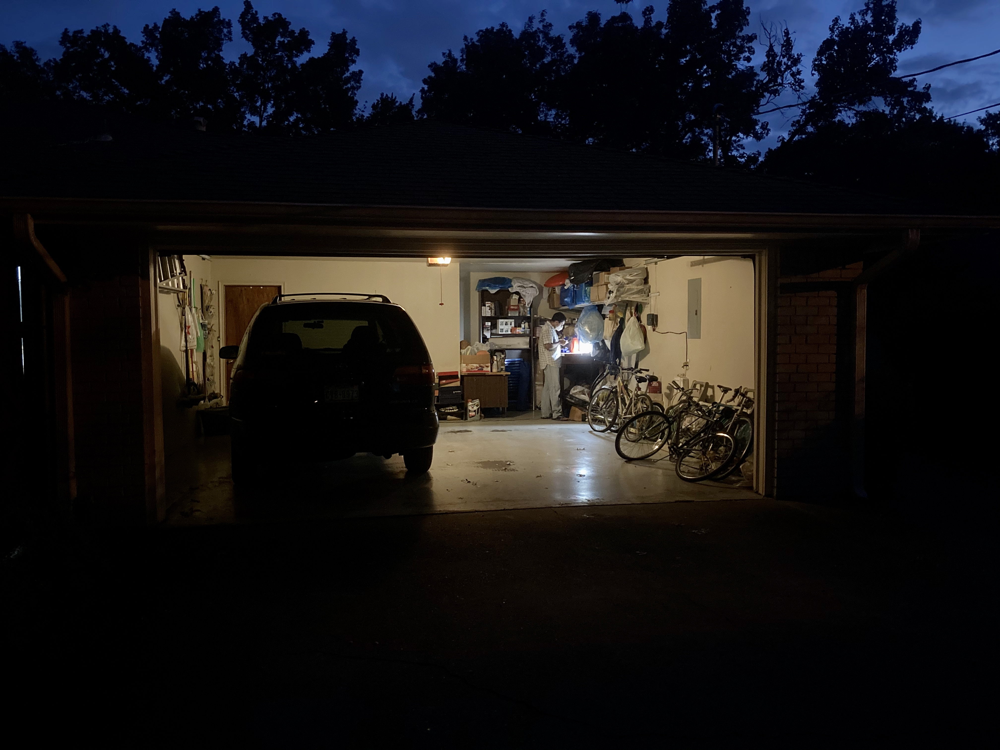
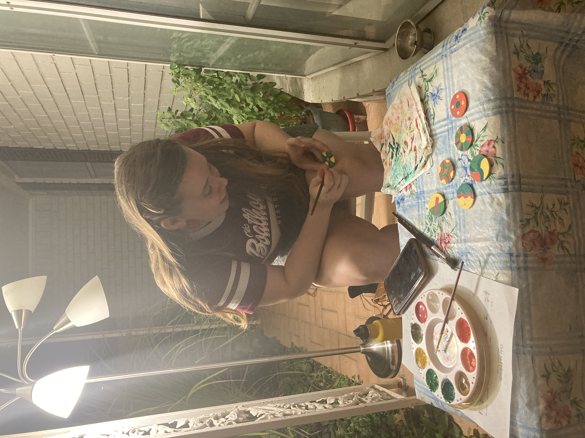

"There is nothing better than being someone's friend." The theme of friendship has defined the past few months, and my friends constantly fill me with wonder. Their diversity of interests reminds me of the vastness of human thought; their various ways of expressing love reminds me of the depth of the human spirit. Just as musical intervals carry unique energies, these friends each contribute a special, distinctive feeling. The acoustic guitar music that follows is inspired by this analogy. Each track starts with the sound of the interval.
—Chirag
June 14th, 2020
The songs I recorded in June capture the spirit of my friends, but I have since longed for a more physical way to celebrate these people. I sat at the piano and began playing with the seven intervals I had explored over the summer, with a more sonic, "wall-of-sound" approach than my previous songwriting approach. I eventually arrived at these chords and constructed seven wind chimes tuned accordingly. My incredibly talented friend Solvay Linde painted beautiful wind-catchers for each of the chimes. The patterns are inspired by the musical intervals and can be seen below. Recordings of the wind chimes can be heard below my original acoustic guitar recordings. The chimes will eventually be gifted to my friends, but for now, if you sit on my parents' front porch, a gentle fall breeze may pass, and you feel the spirit of those you love nearby.
—Chirag
November 1st, 2020
Root/octave:
Anna, Roma, Mother Blues, Dany, Jackson

"The core of one's being," hunger, honesty, equality, self-discovery, truth, realization.
2nd/9th:
Anja, Shailen, Holly

Wonder, curiosity, awe, freedom, bliss.
Major 3rd/10th:
Patricia, Havi, Kannan, Clara Ann, Alena

Positivity, reflection, motion, home, joy.
Perfect 4th
Evan, Stephen, Patrick, Aleksey, Emily

Stability, humility, Nature, simplicity, peace, listening, meditation.
#11
Solvay, Austin, Andy

Energy, creativity, all-encompassing, symmetry, inspiration, playfulness.
Major 6th
Brian, Kurt, Emma, Nathan

Compassion, thoughtfulness, longing, emotion, care, love.
Major 7th
Parker, Leo, Ben, Mikey

Elegance, grace, solitude, rain.
The Creative Process
Cutting and tuning the wind chimes in my little workshop (my parents' Dallas garage).
Solvay at work, painting beautiful patterns on the wind-catchers.

Friends standing near their respective chimes.